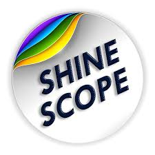

Digital Marketing and Data Visualization Professional
+91-7008604471
manasranjanbisi@gmail.com
Sundargarh, Odisha, India
Digital marketer with over 7 years of experience in driving growth through strategic campaigns, marketing automation, and data-driven decision-making. Skilled in lead generation, campaign optimization, and content strategy with a proven record of increasing engagement and conversion. Proficient in Power BI for client-focused data visualization and reporting, creating impactful insights that support business objectives. Known for strong project management, cross-functional leadership, and the ability to deliver results in fast-paced environments.
Amity University Jharkhand | FEB 2024 - PRESENT
Premsons Motor Udyog Pvt Ltd | 2023 - Feb 2024
Auxin | 2020 - 2023
Modo Edulabs | 2019 - 2020

ShineScope Media Pvt Ltd | 2016 - 2019
B.Tech in Electronics and Telecommunication | Graduated: June 2013
+2 Science | Graduated: May 2009
Matriculation | Graduated: June 2007